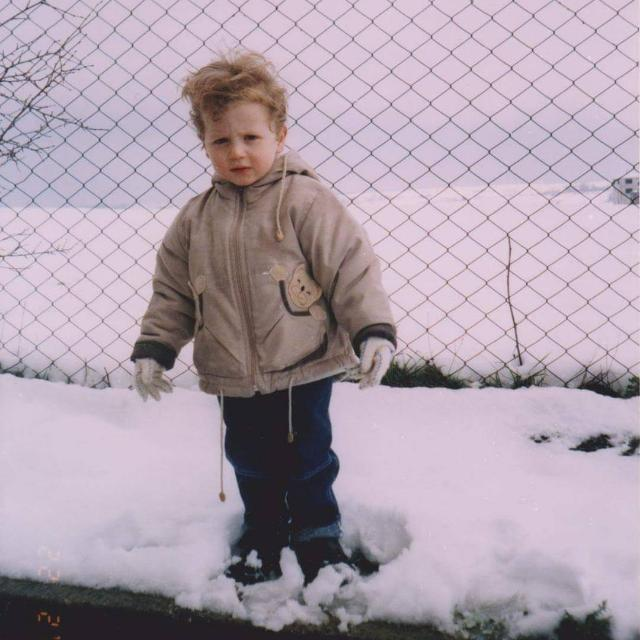

ÖZGEÇMİŞ
4 Eylül 2001 sabahı dünyaya geldim. 7 yaşıma kadar Sakarya'nın Kaynarca ilçesinde ikamet ettim. Anaokulunu Atatürk İlköğretim Okulu bünyesinde tamamladıktan sonra, Adapazarı ilçesinin Karaman mahallesine taşındık. 8 yıl boyunca Aykut Yiğit ilköğretim okulunda okudum. Ardından Sakarya Cevat Ayhan Fen Lisesi'ni kazandım. 4 yıl sonunda buradan mezun oldum. Ardından Sakarya Üniversitesi Bilgisayar Mühendisliği bölümünü tercih ederek buraya yerleştim. Şu an 1. sınıfta okumaktayım.